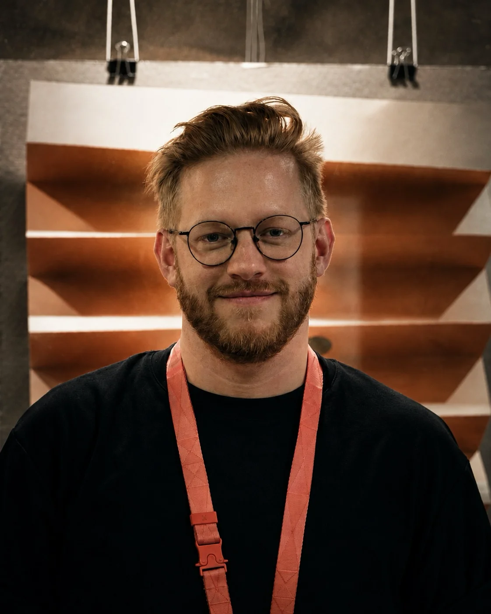
Patrik Antczak is a Czech illustrator and graphic designer. He studied at art schools in the Czech Republic and completed an internship in Warsaw under Polish artist Zygmunt Januszewski. His work is characterised by playfulness, bold colour, and an ability to capture atmosphere and emotion — often combining pencil drawing with digital painting. The books he has illustrated have won numerous awards, including the prestigious Golden Ribbon.
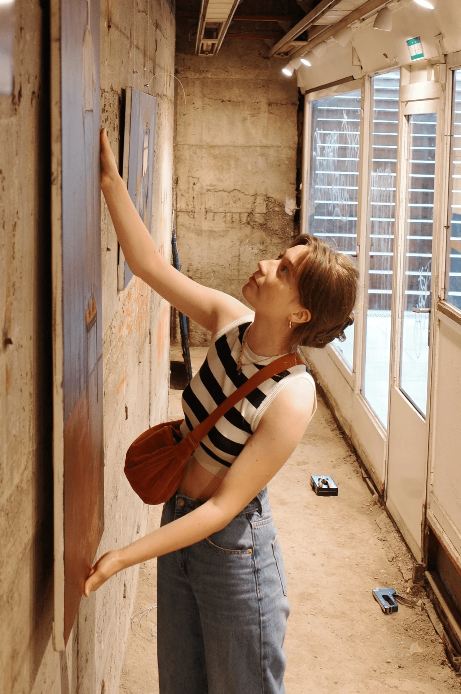
Anna Banytiuk creates figurative paintings full of emotion and quiet tension. In her series Journeys into the Unknown she explores themes of identity, movement, and the search for a place in the world.
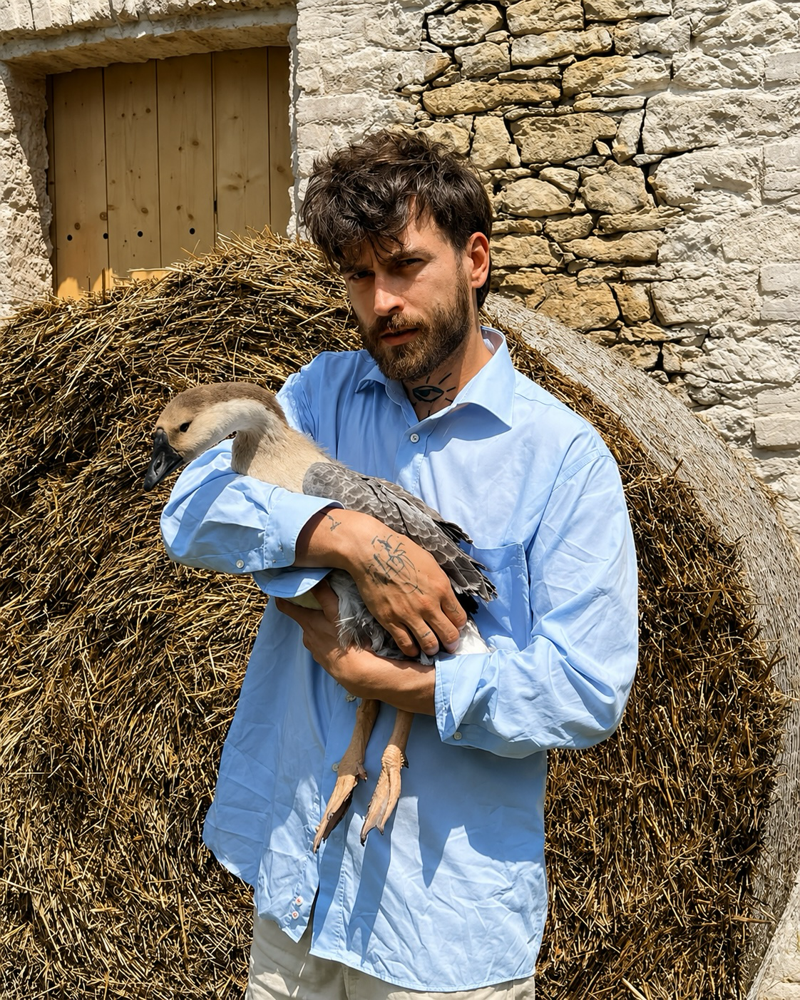
Denis Baštuga is a graduate of the Painting 2 studio at Prague's Academy of Fine Arts (AVU). His work reflects the unique experience of life on a farm, which he shares with poultry, pigeons, and pigs. He sees his pastoral animals as companions, yet they also serve a practical purpose. He is devoted to rational farming, which involves raising traditional breeds that allow for the full expression of animals' genetic potential. His work is characterised by expressive layering of nature motifs and abstract structures in pastel shades with a comic-book aesthetic. It touches on themes of farm life, the connection between humans and nature, and the intertwining of their cycles.
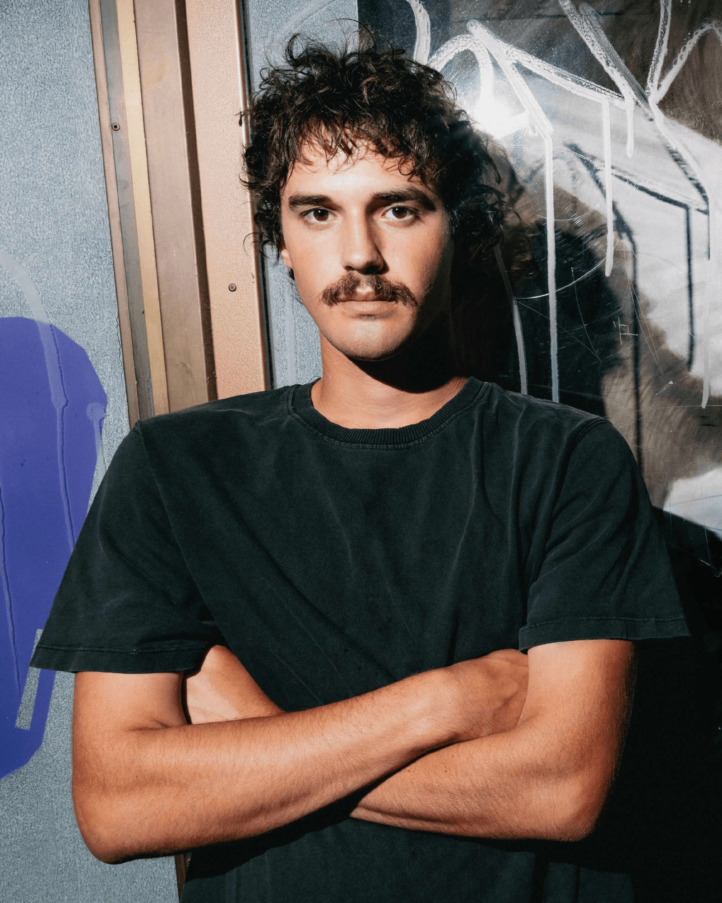
Martin Jáchym is a young Czech artist whose work opens up themes of mental health, social patterns, and emotion. His installation at galerie POSTOJ was created as a response to the pressures of modern society, where admitting weakness or asking for help can be difficult.
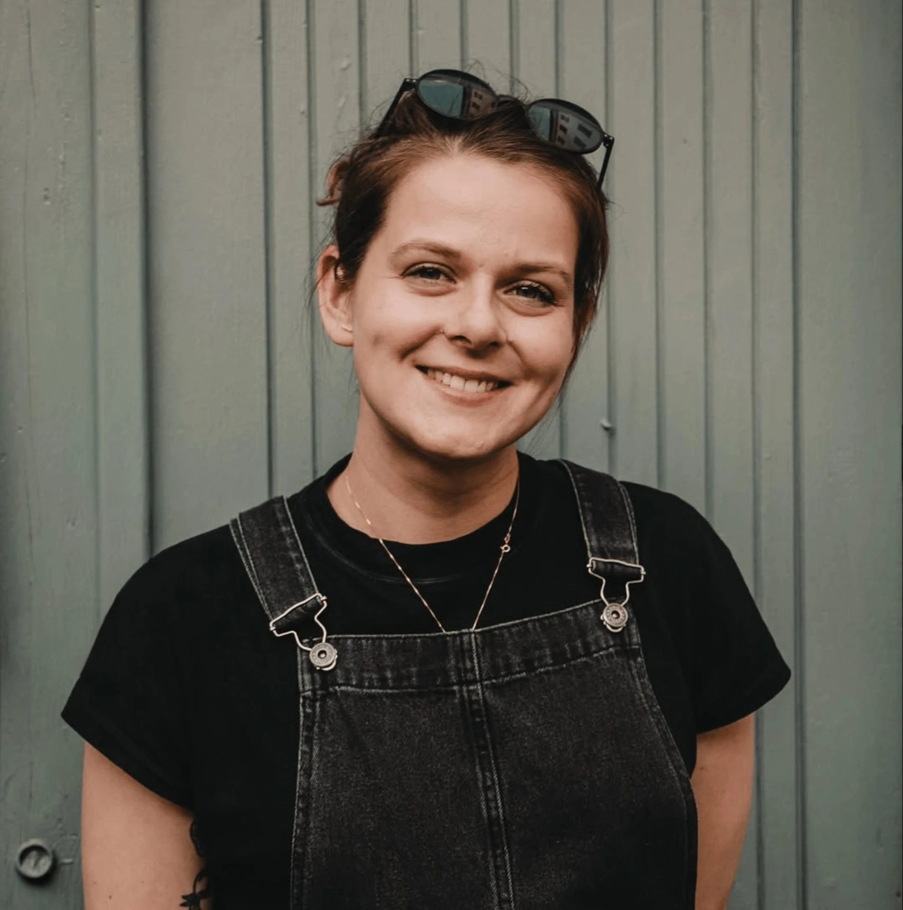
Anina Menger kept returning to Israel after her internship there. In 2022 she settled in the desert metropolis of Tel Aviv, where she now works at the local Czech Centre. Her paintings are often inspired by her surroundings, and she absorbs the vibrant atmosphere of the city during her daily commute — most often by bike.
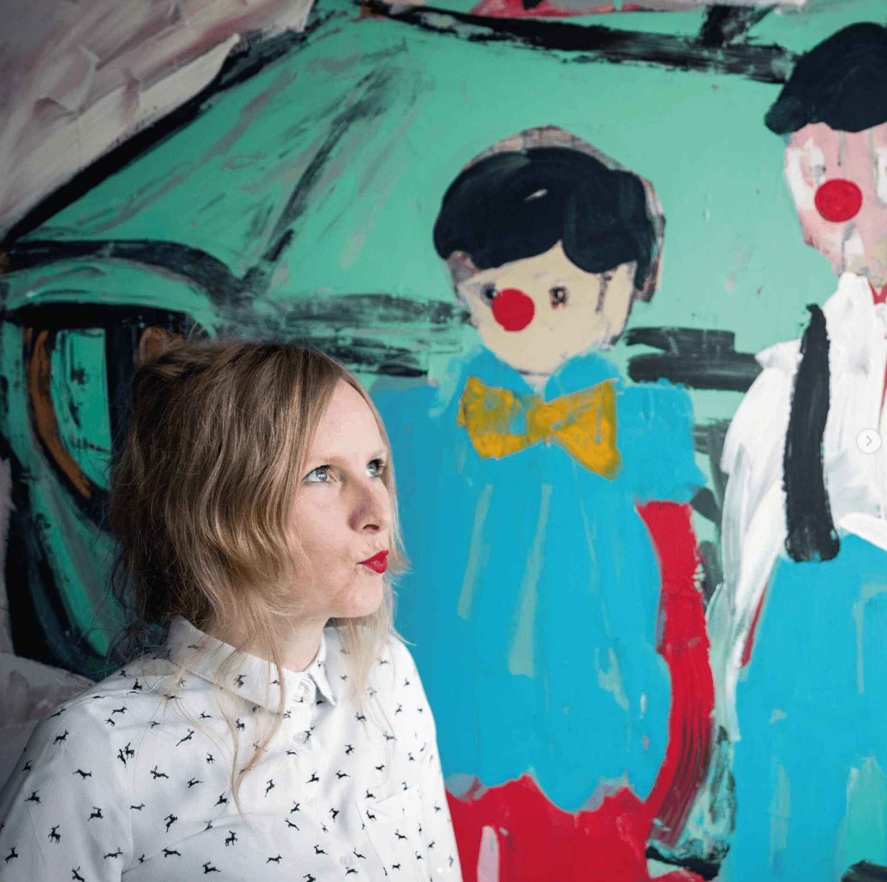
Jitka Petrášová graduated from the Department of Art Education at the University of South Bohemia in České Budějovice, and also from the Academy of Fine Arts in Prague — Studio of Painting 1 (2019–2022) and Painting 4 (2023–2025). Painter, illustrator, graphic artist, and fashion designer; owner of a small (currently dormant) hand-made fashion label Odsvetlusky and the miniature book publisher Knižnice Kodiak.
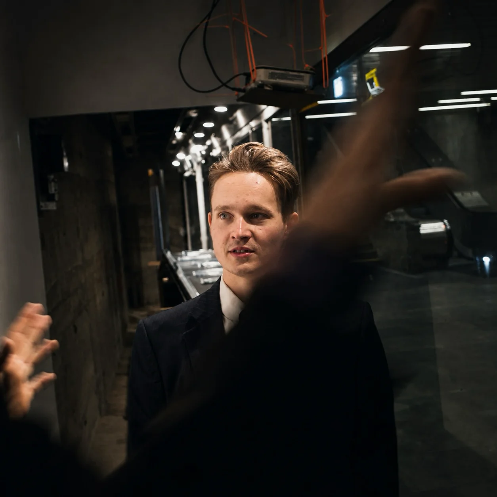
Václav Podestát graduated from the Studio of Creation in Public Space at the Faculty of Art and Architecture at the Technical University of Liberec, under Richard Loskot and Jaroslav Prokeš. His practice has long focused on the relationship between people and public space, examining how visual and informational environments shape our everyday experience of the city.
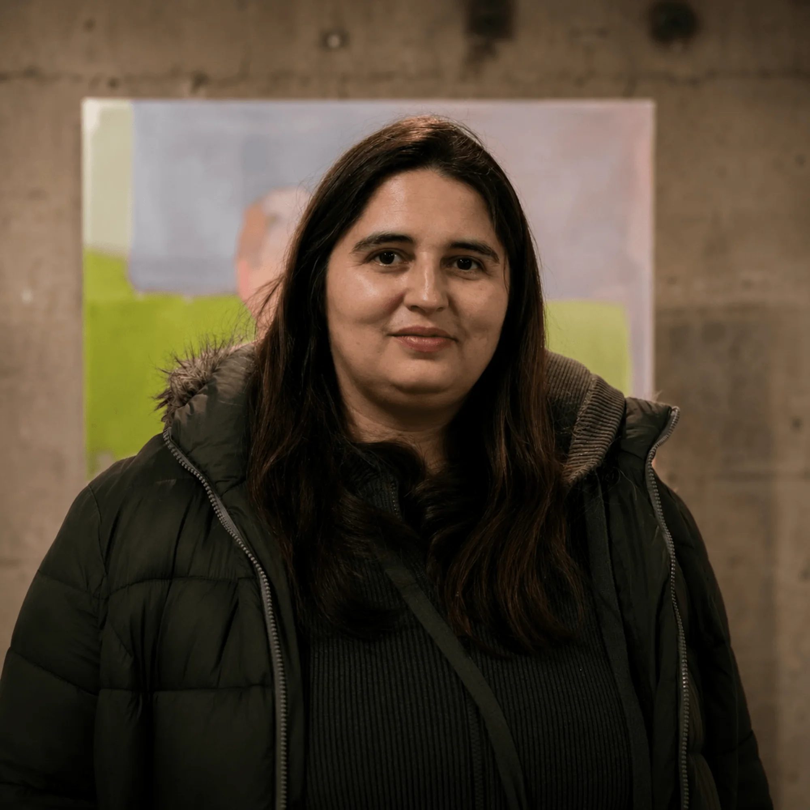
Lucie Pouchová is a painter who weaves together the intimate worlds of people and animals. She studies painting at the Academy of Fine Arts in Prague; her background also spans social pedagogy and social work, where she earned a master's degree at Charles University and continues to support lonely people through the Salvation Army. This experience strongly shapes her artistic approach — her paintings explore themes of relationships, communication, and the search for closeness. Animals here often serve as mediators of emotion and understanding.
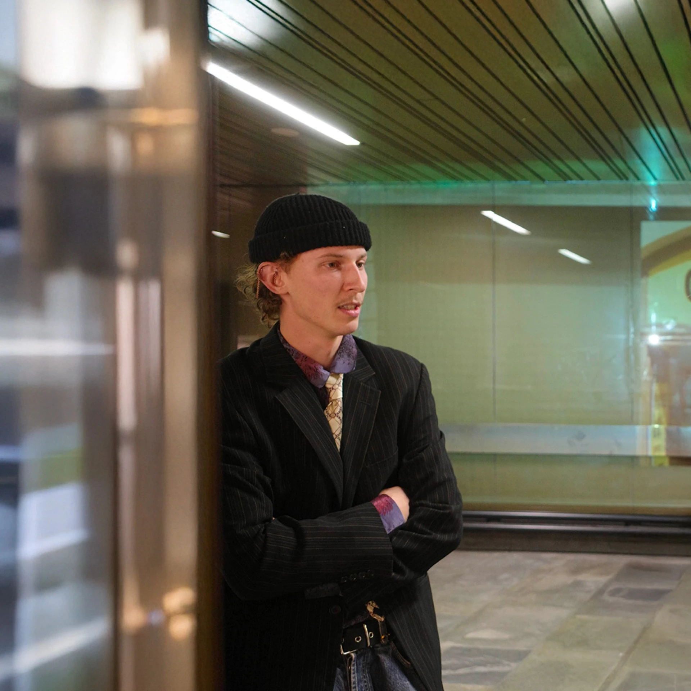
Ondřej Syřiště is a student at the Studio of Spatial Creation at the Faculty of Fine Arts at Brno University of Technology, under Jiří Příhoda and Pavel Korbička. His work sits at the intersection of installation and conceptual art, examining the mechanisms through which contemporary visual culture and the media landscape act upon us.
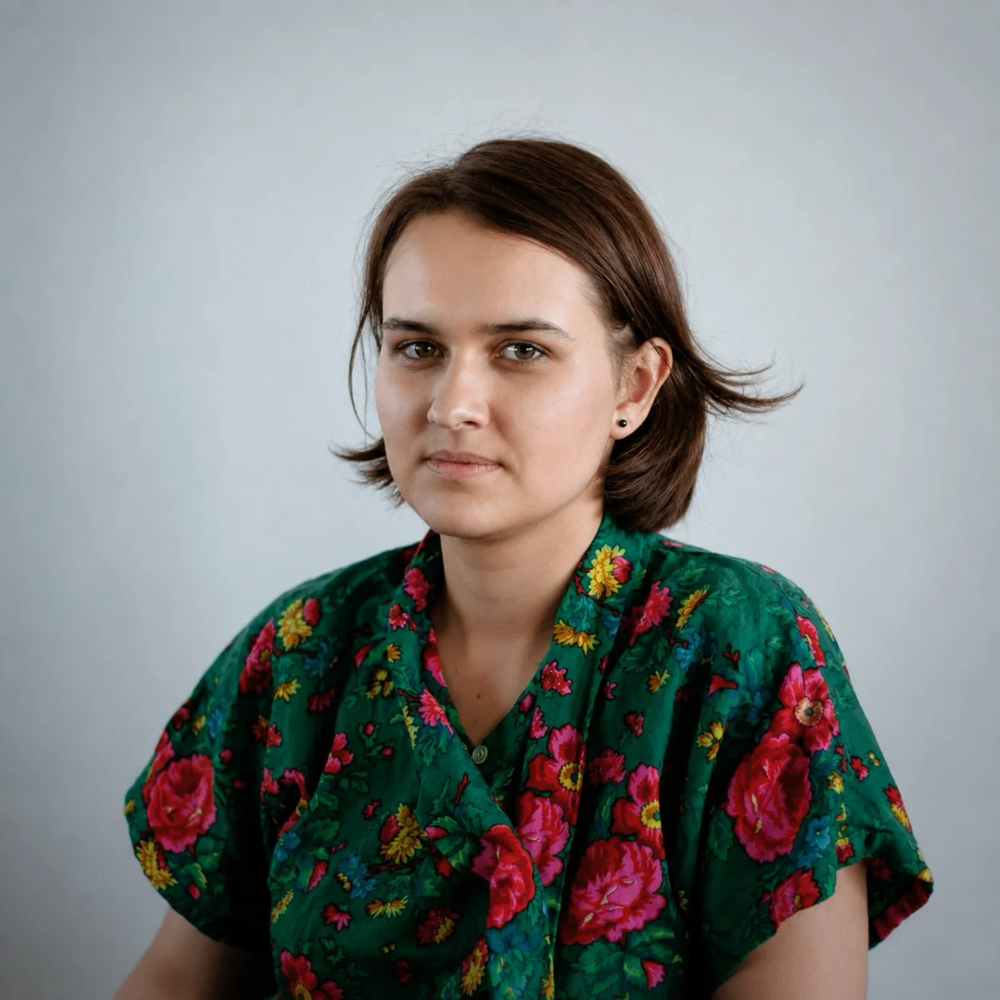
Helena Ticháčková studied at the School of Arts and Crafts in Jihlava-Heleníne — majoring in Painting and Illustration. She is now part of the Painting 1 studio at the Faculty of Fine Arts in Brno, under Vasil Artamonov and Marie Štindlová.
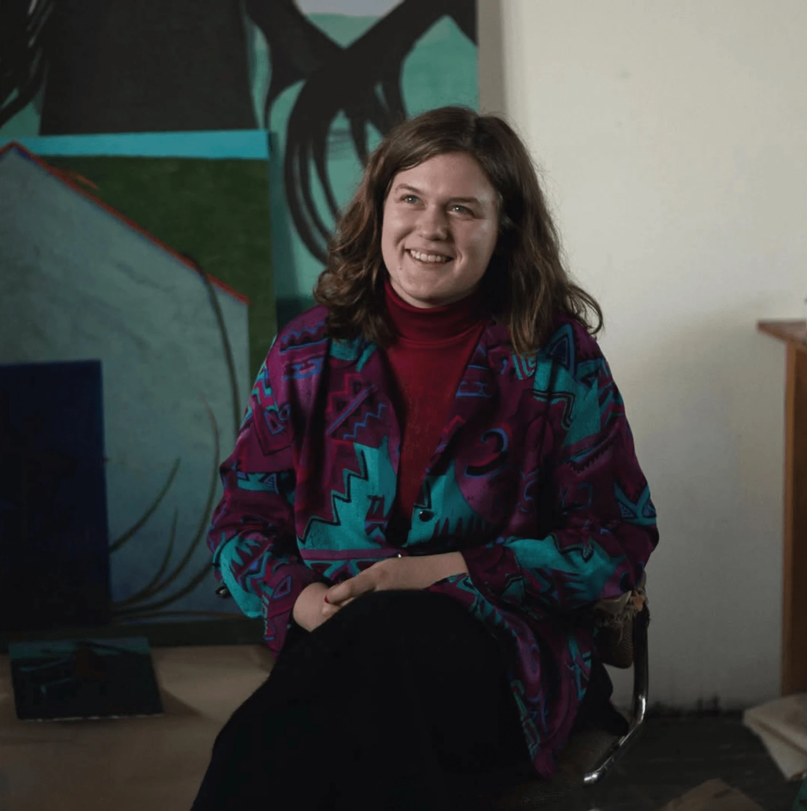
Adéla Valchařová studied at the Secondary School of Art in Ostrava, majoring in Painting. She is currently a student at the Faculty of Fine Arts in Brno under Vasil Artamonov and Marie Štindlová in the Painting 1 studio. In spring 2022 she completed an internship in Cluj, Romania. In her past and current work she draws on fantastical scenes from memories that gradually fade and reshape into a new reality.